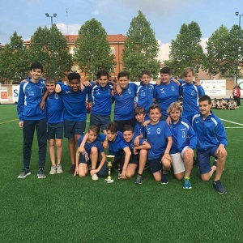
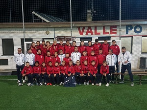
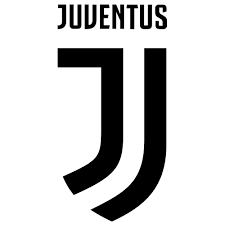

Questa pagina é dedicata al calcio, grande passione che ho da sempre avuto e che ho ereditato dai miei fratelli maggiori.
Ho cominciato a giocare quando avevo 4 anni, e il primo anno l'ho fatto insieme ai ragazzi un anno piú grandi di me, con cui con alcuni di loro,
mantengo ancora i contatti tutt'oggi.
Dal secondo anno in poi, ho sempre giocato con ragazzi della mia stessa etá, con cui oramai gioco da diversi anni.
La mia prima squadra é stato il Revello Calcio, in qui ho giocato per piú o meno 7 anni e dove ho incontrato maggior parte della mia squadra attuale.
In quei anni ho giocato in diversi ruoli, sono finito dalla prima punta, all'ala fino al terzino.
Terminato l'ultimo anno in quella societá, io e il resto del gruppo, abbiamo deciso di cambiare squadra ed unirci a quella della Valle Po.
Qui abbiamo giocato i primi due anni con il vecchio allenatore che avevamo nel Revello, con cui ho cambiato definitivamente
il mio ruolo: da terzino, ad ala e prima punta.
Dopo questi anni, é arrivato uno dei migliori mister che abbia mai avuto, e con cui mi sono divertito di piú.
Infatti con lui, sono riuscito a riappassionarmi al calcio e a fare la migliore stagione che abbia mai fatto: come prima punta ho segnato 24 goal
e circa 15 assist.
In quell'anno sono stato anche convocato per la rappresentativa regionale, con cui ho effettuato solamente il primo ritrovo, a causa della chiusura
della pandemia.

A livello di calcio professionistico, la mia squadra preferita é la Juventus.
Fin da piccolo son sempre stato innamorato di questa squadra, amore condiviso con tutta la mia famiglia, con cui sono andato anche diverse volte
allo stadio per partite di Serie A o Coppa Italia.
Il mio calciatore preferito, é da sempre stato dal suo arrivo, Paulo Dybala.
Mi ha sempre fatto impazzire la sua bravura e freddezza sotto porta, e la sua grande tecnica. Anche se in questi ultimi anni, fra infortuni e il Covid, non ha giocato
granché, rimane comunque il mio calciatore preferito.